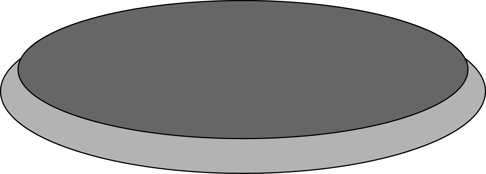
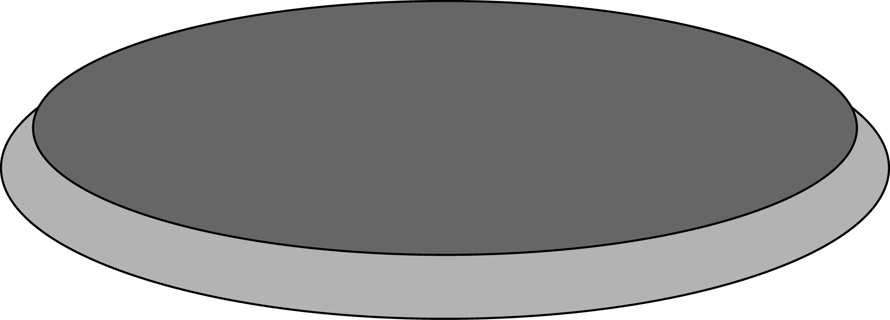

HISTORY
After a few decades of death, slavery and misery, the human race finally defeated The Grays. When they conquered the earth in 2040, the humans started working on a project to take back their home. They started developing an AI that could control millions of war robots capable of taking down the Grays. The AI, later named Spencer, was finished in 2068, 28 years after the aliens came. The war lasted for 5 years, but because the AI controlled the war-machines, human casualties were limited. When the war finished the AI took over as a new world leader and a new period of peace began.
STATISTICS
- 100 million
- The AI wiped approx. 100 million aliens(The Greys) from the face of the earth. The remaining aliens escaped.
- 28 years
- It took 28 years to fully develop the AI
- 50 billion dollars
- The approx. total cost of research and development of the AI is believed to be around 50 billion dollars
DETAILS
- Kernel: Modified Linux kernel running SkyOS v. 2.0 with neutronium as source of energy.
- Software: FacialScanner v. 2.3, VoiceRecognition v 3.4, Pattern
- Hardware: Empathy Module, Shkadov Thrusters, Dyson Sphere, Alderson Disk
- Abilities: Xenology, Faraday Battle Suit, EMP(Electromagnetic Pulse),Nanotech Needler
- Weapons: Active Fusion Blaster, Renewed Photon Rifle, Heavy Thermal Cannon, Rapid-Fire Anti-Matter Pistol
FUN FACTS
- The AI's superior intelligence made it the perfect match for a new world supreme ruler
- The AI has the ability to self-repair, and is also self-aware
- It understands human emotions, and has the ability to mimic human facial expressions.